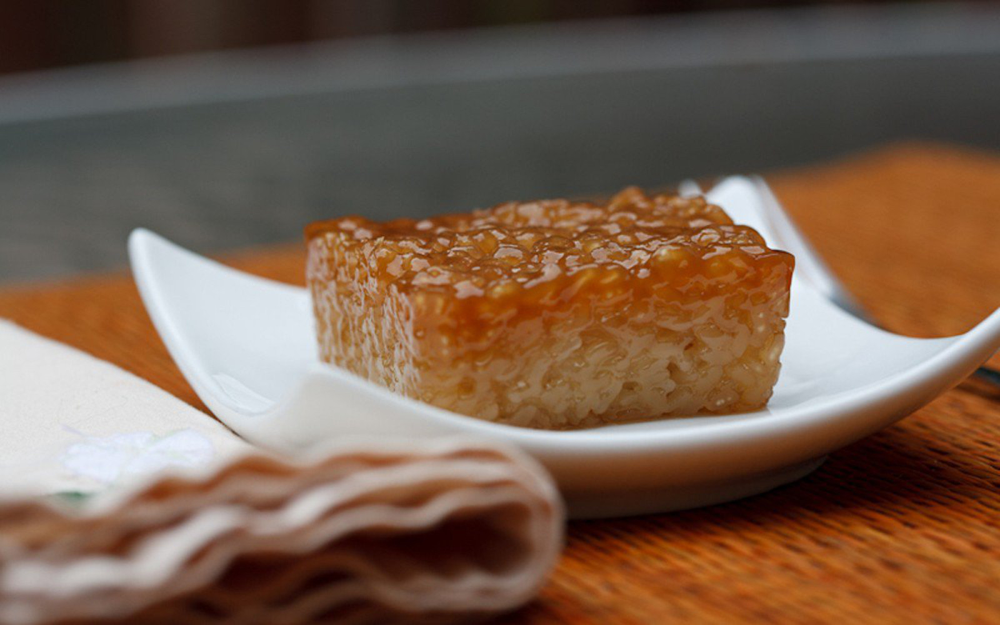

|  |
DescriptionBiko is a sweet rice cake from the Philippines. It is made of coconut milk, brown sugar, and glutinous rice. It is usually topped with latik. It is a type of kalamay dish and is prepared similarly, except the rice grains are not ground into a paste. They are also sometimes packaged and sold as suman. Ingredients2 cups glutinous rice aka sticky rice or malagkit Procedure1. Combine the sticky rice and water in a rice cooker and cook until the rice is ready (we intentionally combined lesser amount of water than the usual so that the rice will not be fully cooked) PriceP10 / slice |
||
| Previous | Next |